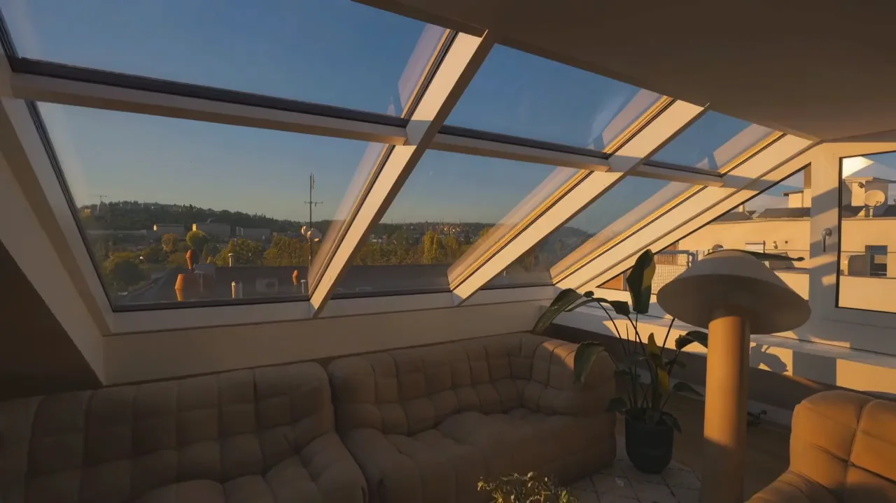

Rezidence
Do ulice cihla.
Do dvora klid.
Mezi Vltavou a Vyšehradem stojí dům s pěti byty. Z ulice ho poznáte podle pískové cihly a hlubokých oken. Z druhé strany se otevírá lodžiemi do zeleně podolského vnitrobloku.
Otevřete dům.
Klikněte na patro domu. Fasáda se rozevře a podlaží uvidíte v prostorovém řezu.
 Nad Sokolovnou 3
Nad Sokolovnou 3Pět podlaží,
pět bytů.
Ve druhém podlaží jsou dva byty. Horní dvě podlaží spojuje mezonet s vlastní terasou.
Ceny a dostupnost bytů
Podlahové plochy nezahrnují lodžie a terasy. Ceny a dostupnost podle podkladů k 11. 11. 2026. Aktuální stav potvrdí Jan Chundela.
Listovat všemi půdorysy 6 výkresů
Výkresy rezidence
Byt po bytu.
Obě úrovně mezonetu mají vlastní výkres. Každý půdorys si můžete zvětšit.
Mezonet / 4. a 5. podlaží
Večer pod sklem.
Schodiště z jídelny vede pod šikmou prosklenou střechu. O pár kroků dál už jsou venku jen terasy a střechy Podolí.
Fotografie rezidence
Za dveřmi bytů.
Od prvního podlaží až pod střechu. Takhle vypadají podlahy, okna a lodžie jednotlivých bytů před nastěhováním.
Okolí domu / Praha 4
Dolů k řece.
Nahoru na Vyšehrad.
Z ulice Nad Sokolovnou se dá sejít k Vltavě a pokračovat podél přístavu. Opačným směrem vedou podolské schody nahoru na Vyšehrad.
Nad Sokolovnou 3 na mapě